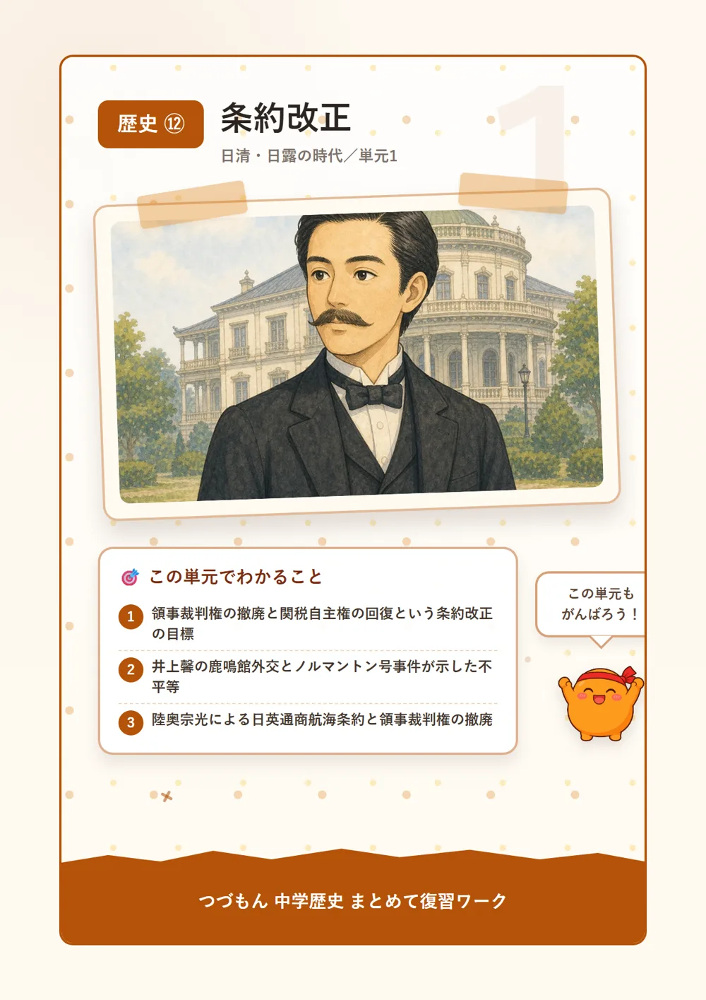
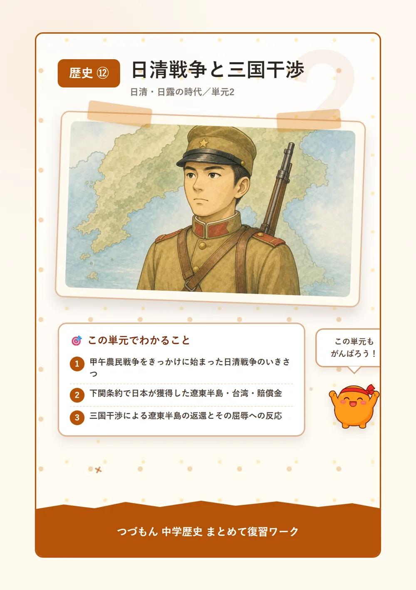
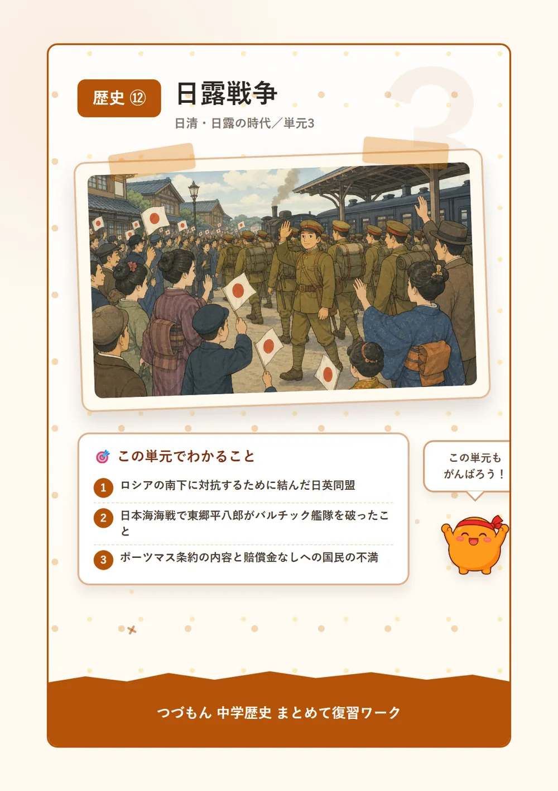
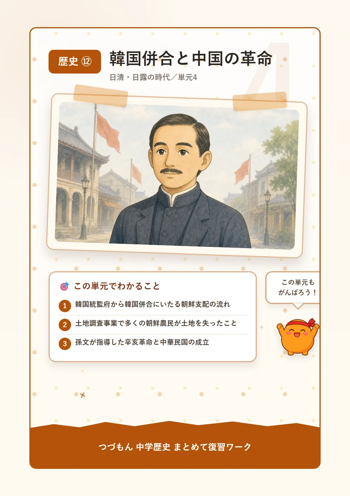
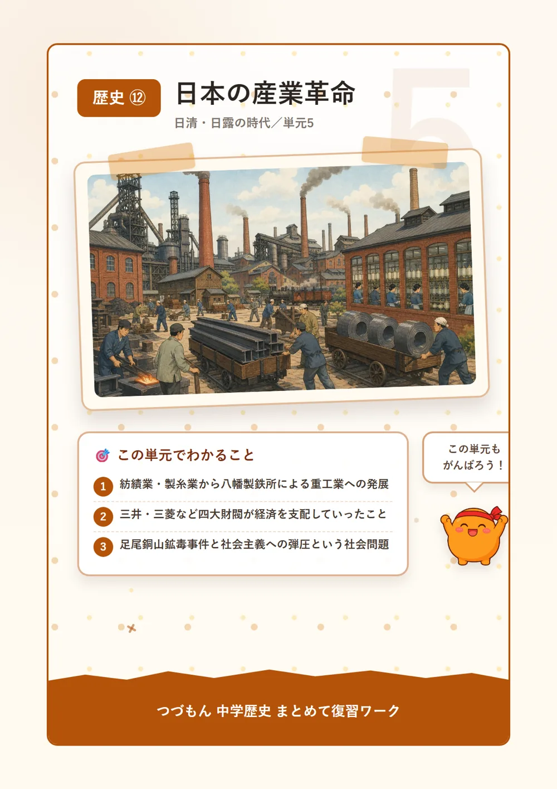
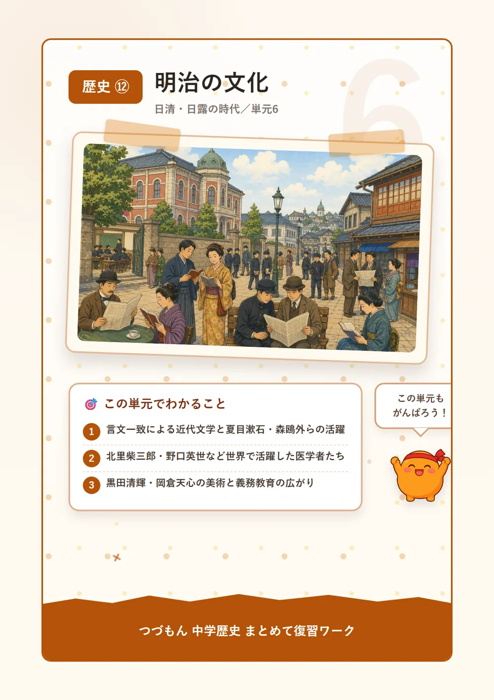

日清・日露の時代

条約改正

1条約改正、2つの目標
幕末に結んだ不平等条約には、実は2つの困った点があったんだ。ひとつは、日本にいる外国人が罪を犯しても日本の法律で裁けない領事裁判権(治外法権)。もうひとつは、輸入品にかける税率を自分の国で決められない、つまり関税自主権がないことだったんだよ。明治政府にとって、この2つを取り戻すことはまさに悲願だったんだ。どちらも「日本は一人前の国として扱われていない」ということを意味していたんだね。
2鹿鳴館で舞踏会?井上馨の作戦
外相井上馨は、日本も欧米に負けない文明国だとアピールしようと考えたんだ。そこで建てたのが鹿鳴館。そこで舞踏会を開き、洋服を着て踊る欧化政策を進めたんだよ。すごい発想だよね。でも、あまりに極端な欧化だと国内から批判が噴出してしまい、交渉は失敗に終わってしまったんだ。さらに1886年にはノルマントン号事件が起き、日本人乗客が見殺しにされたのに裁判はイギリス領事が担当…領事裁判権の理不尽さを人々に強く印象づけることになったんだよ。
3陸奥宗光、ついに領事裁判権を撤廃
1894年、外相陸奥宗光はイギリスとの交渉に力を注ぎ、日英通商航海条約を結ぶことに成功したんだ。これでようやく領事裁判権が撤廃されたんだよ。ちょうど日清戦争が始まる直前のタイミングだったんだ。実はイギリスは、ロシアの南下を警戒していて、日本との関係を強めたいという事情もあったんだよ。両国の思惑が重なって、悲願の一歩がついにかなったというわけだね。
4小村寿太郎が完成させた条約改正
残るは関税自主権。これを取り戻したのが外相小村寿太郎だったんだ。1911年、アメリカとの交渉によって関税自主権の完全回復に成功したんだよ。幕末の開国から数えると、なんと半世紀にもわたる悲願がついに達成された瞬間だったんだ。小村寿太郎は日露戦争後のポーツマス条約交渉でも活躍した、明治を代表する外交官なんだよ。

日清戦争と三国干渉

1日清戦争のはじまり
1894年、朝鮮で甲午農民戦争(東学党の乱)という農民反乱が起きたんだ。これを鎮めるために日本と清がそれぞれ軍を送りこんだことがきっかけとなって、朝鮮の支配権をめぐる日清戦争が始まってしまったんだよ。明治維新から富国強兵を掲げて近代化を進めてきた日本は、清よりも軍備で優位に立っていて、戦いを優勢に進めていったんだ。
2下関条約、日本の大きな成果
1895年、山口県で講和会議が開かれ、下関条約が結ばれたんだ。日本側は伊藤博文と陸奥宗光、清側は李鴻章が交渉にあたったんだよ。この条約で日本は遼東半島と台湾、そして多額の賠償金を手に入れたんだ。まさに大勝利だよね。台湾には台湾総督府が置かれ、日本初の植民地となったんだよ。
3三国干渉という屈辱
ところが、大喜びもつかの間。ロシアはドイツ・フランスを誘って、日本に遼東半島を清へ返すよう迫ってきたんだ。これを三国干渉というよ。大国3つに囲まれた日本は、悔しさをこらえて受け入れるしかなかったんだ。国民は臥薪嘗胆を合言葉に、この屈辱を忘れずロシアに対抗する力を蓄えていくことになるんだよ。不思議でしょ?この屈辱こそが、次の日露戦争へとつながっていくんだ。
4賠償金が生んだ八幡製鉄所
下関条約で得た賠償金は、ただ使われただけじゃないんだ。その一部は1901年に操業を始めた官営の八幡製鉄所の建設費にあてられたんだよ。これによって日本は鉄鋼を自分の国でつくれるようになり、重工業発展の大きな土台になったんだ。戦争の結果が、意外な形で日本の産業を後押ししたんだね。
日露戦争

1日英同盟という後ろ盾
1900年、中国で外国勢力を追い出そうとする義和団事件が起こったんだ。鎮圧後もロシアは満州にとどまり続け、南へ勢力を広げようとしていたんだよ。これに危機感を持った日本は、1902年にイギリスと日英同盟を結んでロシアに対抗する準備を整えたんだ。強い味方を得たことで、日本は安心して次の一手に進めるようになったんだよ。
2日露戦争と日本海海戦
1904年、ついに日露戦争が始まったんだ。そして1905年、連合艦隊司令長官東郷平八郎が、はるばるやってきたロシアのバルチック艦隊を日本海海戦で打ち破ったんだよ。「東洋のネルソン」とまで呼ばれた東郷の活躍はすごいよね。ただし、内村鑑三や与謝野晶子のように、戦争そのものに反対する声を上げた人たちもいたことも忘れないでおこう。
3ポーツマス条約と国民の不満
1905年、アメリカ大統領セオドア・ルーズベルトの仲介でポーツマス条約が結ばれ、日露戦争が終わったんだ。日本側全権は小村寿太郎。この条約で日本は韓国の優越権や南満州鉄道の権益、樺太の南半分を手に入れたんだよ。でも、賠償金は一切得られなかったんだ。多くの犠牲を払った国民は納得できず、怒りが爆発して日比谷焼き打ち事件という暴動まで起きてしまったんだよ。
韓国併合と中国の革命

1韓国統監府から韓国併合へ
日露戦争後の1905年、日本は韓国統監府を置いて韓国を保護国としたんだ。初代統監に就任したのは伊藤博文。ところが1909年、伊藤博文は満州のハルビン駅で朝鮮の独立運動家安重根に暗殺されてしまうんだよ。そして1910年、日本はついに韓国併合を行い、韓国を植民地としてしまったんだ。統治のために置かれたのが朝鮮総督府だったんだよ。
2土地を失った朝鮮の農民
朝鮮総督府は土地調査事業という政策を進めたんだ。これは土地の所有権を届け出てもらうしくみだったんだけど、手続きが複雑だったこともあり、多くの朝鮮の農民が結果的に土地を失ってしまったんだよ。知ってた?この土地調査事業は、植民地支配のつらい一面を物語る出来事なんだ。
3辛亥革命と中華民国の誕生
同じころ、隣の中国でも大きな変化が起きていたんだ。孫文が民族・民権・民生からなる三民主義を唱えて指導した辛亥革命が1911年に起こり、約260年続いた清王朝がついに倒されたんだよ。翌1912年には、アジアで初めての共和国中華民国が誕生したんだ。孫文が臨時大総統に就任したけど、その後まもなく実権は軍を率いる袁世凱へと移っていったんだよ。
日本の産業革命

1軽工業から重工業へ
明治後期、機械を使った工業生産が広がる産業革命が日本でも進んだんだ。まずは綿花から綿糸をつくる紡績業や、蚕の繭から生糸をつくる製糸業といった軽工業が発展し、生糸は日本最大の輸出品にまで成長したんだよ。そして1901年には、日清戦争の賠償金を活用した官営の八幡製鉄所が操業を開始し、鉄鋼や機械などの重工業も本格的に発展していったんだ。
2財閥の力が強まる
産業が発展するにつれて、三井・三菱・住友・安田といった財閥が金融や工業などさまざまな分野を支配するようになっていったんだよ。財閥は同族を中心にした巨大な企業グループで、日本の経済を大きく動かす存在になっていったんだ。すごい規模だよね。
3足尾銅山鉱毒事件と社会問題
急速な産業発展は、いいことばかりじゃなかったんだ。栃木県では、銅山から出た鉱毒が渡良瀬川に流れ込み、農作物や住民に深刻な被害をあたえる足尾銅山鉱毒事件が起きてしまったんだよ。衆議院議員の田中正造は、この被害の解決を求めて天皇に直訴までしたんだ。労働者たちも労働条件の改善を求めて労働組合をつくり、幸徳秋水らは平等な社会を目指す社会主義を唱えたけど、1910年の大逆事件で厳しく弾圧されてしまったんだよ。
明治の文化

1言文一致と近代文学
それまでの文学は堅苦しい文語体で書かれていたんだけど、明治になると話し言葉に近い文体で書く言文一致の運動が広がっていったんだ。夏目漱石は「坊っちゃん」などで近代日本人の苦悩を描き、軍医でもあった森鴎外は「舞姫」を著したんだよ。女性作家の樋口一葉は「たけくらべ」を残し、歌人の与謝野晶子は情熱的な歌集「みだれ髪」で知られているんだ。すごいメンバーが同じ時代に活躍していたんだね。
2世界で活躍した医学者たち
医学の分野でも、日本人研究者が世界的な成果をあげていたんだよ。北里柴三郎は破傷風の血清療法を確立し、野口英世はアフリカで黄熱病の研究に打ち込んだんだ。二人とも新しい紙幣の肖像に選ばれるほど、今なお尊敬されている人物なんだよ。知ってた?こうした研究の多くは、当時最先端だったドイツなどへの留学を通じて培われたものなんだ。
3美術と教育の広がり
美術の分野では、フランスで学んだ黒田清輝が「湖畔」を描き、明るい印象派の画風を日本に伝えたんだ。岡倉天心は東京美術学校の設立に力を尽くし、日本美術を世界へ紹介したんだよ。教育の面では、1890年に国民道徳の基本を示す教育勅語が発布され、1907年には義務教育の年限が6年に延長されて、就学率はほぼ100%にまで達したんだ。